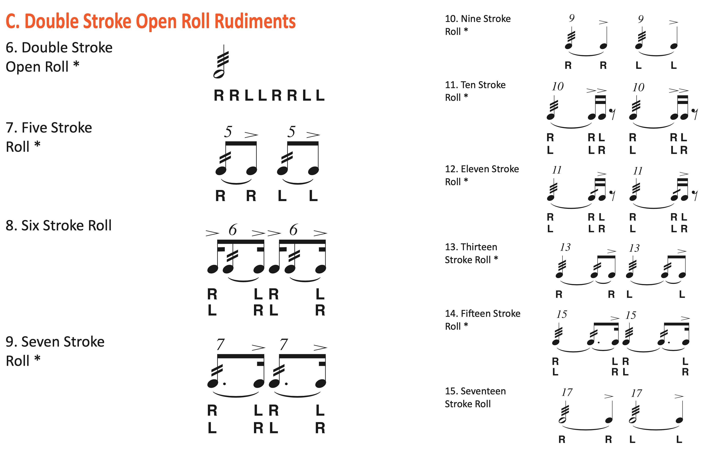

An Honest Look at the Rudiments
Posted on May 16, 2021

Earlier this week, someone posted on r/drumming asking about the rudiments. I chimed in on the thread but I feel like expanding on my thoughts more here, since I have yet to talk at length about the rudiments (and there’s a lot to talk about). The OP was specifically asking about what is and isn’t a rudiment (i.e. why is this lick a rudiment, but not that one).
I feel like this is a common question, but I don’t see it asked/discussed very often on the internet. Perhaps most drummers don’t want to question the almighty rudiment list. But when I was younger, I certainly remember looking at the list of 40 and thinking: ok, there’s a double stroke roll (RR LL) and a triple stroke roll (RRR LLL), but why is there no quadruple stroke roll (RRRR LLLL) or quintuple stroke roll (RRRRR LLLLL)?
The OP shared similar thoughts regarding the short rolls, of which there are nine:
You may look at the above and feel confused as to how you’re supposed to remember all that — again, back in the day I remember asking myself: hold on, is there a 12 stroke roll on the list? What about a 19 stroke roll? To the extent that there’s any system behind it, it’s all of the odd numbers from five to seventeen, plus six and ten.
Obviously, the list can’t have every short roll or hand–to–hand roll; otherwise, the list would never end! These patterns are supposed to be rudimental after all, so a line has to be drawn somewhere.
But even with the list’s (ostensible) intention of presenting essential building blocks to the drummer, it’s still hard to make sense of why the list has weird stuff like two different drag paradiddles or three ratamacue variations. What’s the deal with that? I mean, aren’t there more important licks to include? Well, the answer is in the history of the rudiments.
If you research the history of the rudiments, you’ll often find unwieldy discussions about the history of military snare drumming in general. Most of that isn’t terribly important. Things really started developing in the 1800s, when the world’s first drum books were published. These authors (who all came from a marching background) were trying to name and notate popular snare drum patterns. Some of the more well–known books include: A New, Useful and Complete System of Drum Beating (Charles Stewart Ashworth, 1812); The Drummer and Fifers Guide (George B. Bruce, 1865); and Strube's Drum and Fife Instructor (Gardiner Strube, 1870).
If you look through these texts, you’ll find a lot of similar ideas, but with some variations with regards to naming and notation. In the early 1900s, thirteen American drummers got together to form NARD (the National Association of Rudimental Drummers). These guys wanted to standardize the licks from the different books of the 1800s — to create a list of straightforward, common patterns that working drummers would need to know and be familiar with. In 1933 the first list of rudiments was born, with 26 patterns. For some reason, NARD highlighted 13 of the 26 rudiments as being “essential”… whatever that’s supposed to mean.
Then, in 1984, the Percussive Arts Society (PAS) decided to publish a new list with 14 added rudiments. The five years effort was spearheaded by Jay Wanamaker, who was joined by a “highly select group of percussionists” to create the list of 40 rudiments we know today.
So the tl;dr is that the list of rudiments is arbitrary — what belongs on the list is ultimately the opinion of a few dozen or so drummers. Critically, the list only expresses what licks these paticular drummers thought were common and important. As I mentioned in the Reddit thread, patterns such as the “Single Stroke Five”, the “Nineteen Stroke Roll”, or the “Quadruple Stroke Roll” all abstractly exist as licks, but they’re not official rudiments.
There’s an inherent problem with the 40 rudiments: they’re not objective or scientific. Rather, they reflect the specific perspectives and mindsets of a handful of drummers. The reason why something like the “Single Stroke Five” isn’t on the list is that the folks who cooked up the rudiments didn’t feel like such a pattern is popular or crucial enough to make the cut. To what extent that is correct is obviously debatable.
As a drum set player, it’s actually a bit frustrating — the drum set barely existed when the first list was published (I’d say drumming as we know it today originated in the 40s). Even after the PAS updated the list in the 80s, the new list still doesn’t have the drum set in mind.
After spending time with several rudiment books, the ugly truth I’ve discovered is that most rudiments do not work very well on the kit. I’ll concede that they all have some use insofar as they are challenging and technically demanding… but that wasn’t the original objective of the list. To that end, one has to wonder why these are the licks that are regarded as being good for conditioning. There are so many things to pratice out there, and the importance that many of the rudiments are given is unjustified. Meanwhile, for actually making music, most of them are crap, and their spots on the list would be better severed by other chops.
The tradition of rudiments overall is pretty old–fashioned, or at the very least esoteric. The drum and fife practice of yesteryear doesn’t represent how most drummers approach the instrument nowadays. For instance, these days drummers often describe a drum roll as being “open”. That is to say, each note in the roll is in strict time with a well–defined subdivision (like a double stroke roll). This is contrasted with a “closed” roll or buzz roll, where it’s impossible to think of every note in the roll as being in time.
However, at the top of the PAS list, there’s this weird spiel: “All rudiments should be practiced: open (slow) to closed (fast) to open (slow) and/or at an even moderate march tempo”. I have never heard a drummer used “closed” to describe something as being fast. I’ll provide another gripe: there’s really no need nowadays to write short rolls with numbers and slurs, as the list does. And why does the “Z” in the Multiple Bounce Roll look like it was written with Comic Sans?!
Even players from the modern drum corps tradition are confounded by the rudiments list. Eric Carr (a tenor drummer with The Commandant’s Own) made a humorous video tier–ranking all 40 rudiments, and he was quite blunt about how redundant and pointless many of them were.
I whipped up my own ranking of the rudiments:

Yeah, that’s pretty much how it works for me. Some are very useful. A few of them are... meh. The rest? Buttcheeks.
At least, that’s how I would rank them as they are written. For instance, I never play the single stroke four or the single stroke seven as they are written; I always add an accent at the end. In this form, these two rudiments are closer to the oft–forgotten ruff.
I really can’t help but think that drummers just worry too much about the rudiments. When new drummers get started out, they are often told to learn the rudiments, but I’m not a fan of that direction at all. Most new drummers are probably more interested in learning how to play a solid groove than they are in knowing what a triple ratamacue is and how to use it.
If you really want to learn the rudiments, I always say get a rudiment book. I often sing the praises of The Savage Rudimental Workshop by Matt Savage. Once you get through it and learn all 40 rudiments, you’ll probably conclude that you can go the rest of your drum set career without touching most of them ever again.
Rudiments are often compared to musical scales. I guess the thinking is that they’re both important because they’re foundational to creating music. But the core definition of a scale is pretty broad: a scale is just an ordered collection of notes. In addition, there’s no list of “official” scales; even something rather obscure like “Ultraphrygian” is still a real scale.
A lot of drummers are generally unsure of what to make of the rudiments, other than a vague conclusion that the rudiments are important and you have to learn them. But that’s just not the case. To be clear, there are some very useful licks in there. And many more useless ones.
I do admire the rudiments for at least trying to give names to different patterns. However, drummers still tend to be pretty bad at naming stuff, and generally can’t agree on what to call anything that’s not plastered with the label “rudiment”. Maybe not everything needs a name. But I think the philosophy helps more than it hurts. If a guitarist wants to tell the rest of the band to riff on Cm7 and Gm7, do you think everyone would prefer to not use chord names?
Again, however, there’s no system to naming drum stuff the way we do with chords. And that’s really the way things are in drumland. Musicians need to agree on what keys and chords mean when they play together. Meanwhile, a drummer can play some 8th note groove, call it a “flam–a–eggbeater–cheese–a–diddle”, and no one will care as long as it grooves with the song. As Bonham once said, “It’s all very well doing a triple paradiddle — but who’s going to know you’ve done it?”.
Tags: 2021 • Rants & Raves